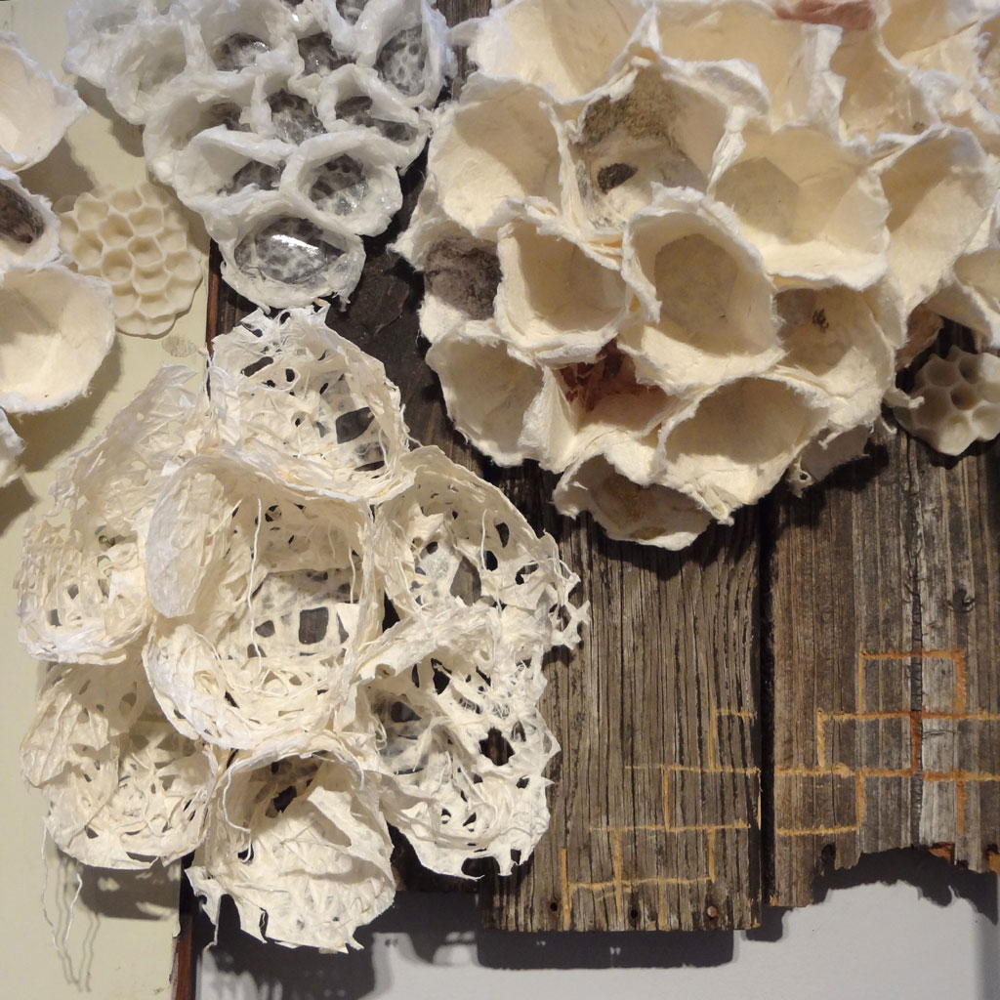
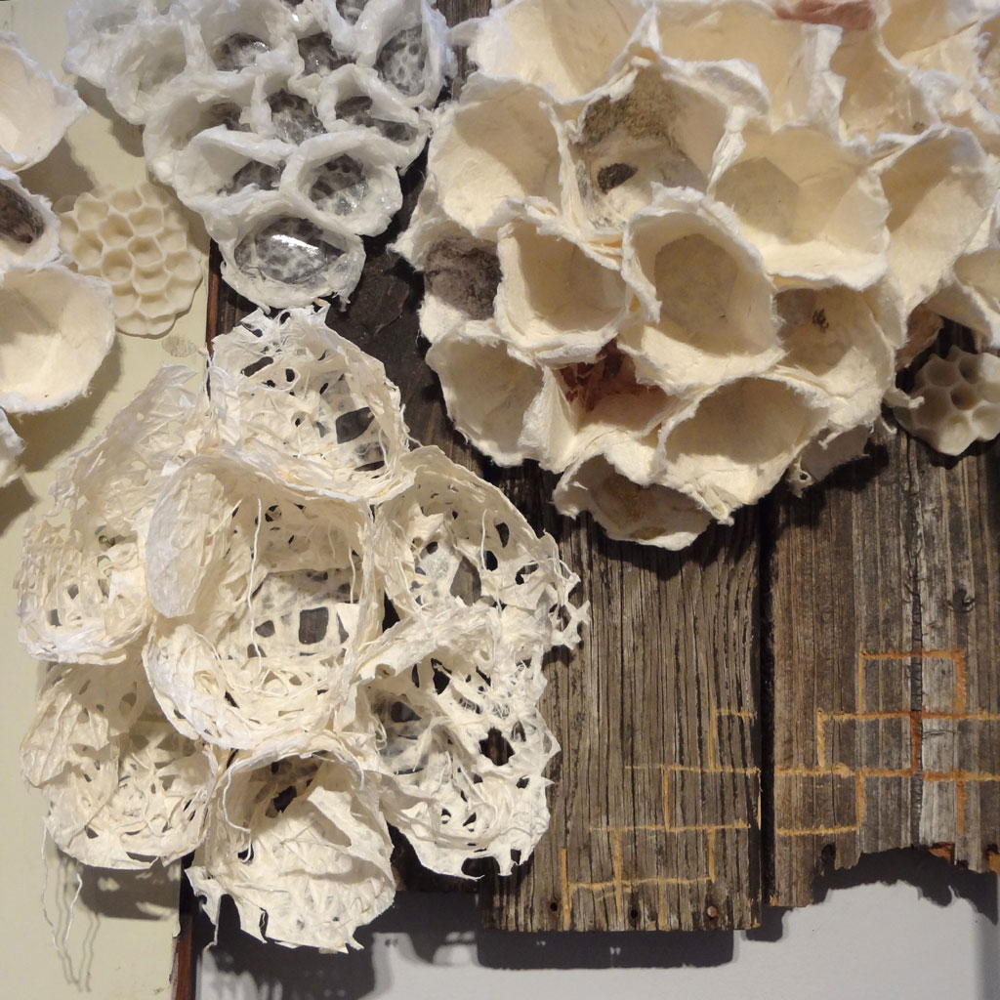

An art installation - BFA Thesis


Native Hum is a soft sculpture installation depicting fabricated over-sized wasp nests. It is made of fabric, paper, photo transfer, yarn, porcelain, and found objects, and featured a faint audio-recording. I was displayed at the Museum of Fine Arts in Tallahassee, Florida for the Spring 2012 BFA Thesis Show.
 

The home exists as a structure. It is a designated space that we inhabit, and the circumstances that we know growing up. It is an undeniable part of our identity, which becomes more apparent the further away we stray. It is not just a house or even an enclosure. The home also exists as as an idea. It is the comfortable, soft space we create for ourselves as a refuge from the world, where we are safe to think and dream. Yet this home is a fragile, vulnerable place with paper thin walls, connected by a single pillar to a more tangible structure. I want to recontextualize the wasp nest so the viewer does not fear the inhabitants, but admires a creature so devoted to protecting her hive.
My work is not about what a home has been through,
but what it must do to survive.